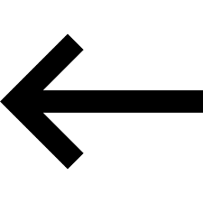

Listas ordenadas
Listas que se enumeran automaticamente, pero se pueden personalizar

Que me agrada de mi

- Mi altura
- Mi forma de ser
- estoy feliz de ser yo mismo
- Mi cabello
Que me no me agrada de mi

- mi cara
- Mi peinado(antes)
- distraido
- olvidadizo
Habilidades

- dedicado a lo que me gusta
- Amable
- Paciente
- Con valores en general
Defectos

- Procrastino
- poco autodidacto